Новости Гранты для бизнеса Партнерам
Оплата
8 (800) 700-06-08
Руководство по панели управления
Содержание
Рекомендуем изучить
Перенос сайта между аккаунтами
Видео: Как быстро настроить редирект с http на https для WordPress
Настройка файла /etc/hosts
Файл hosts – это документ, который присутствует на каждом ПК и содержит сведения о домене и IP-адресе, относящимся к нему. С помощью внесения записей в этот файл можно ограничить доступ к каким-то сайтам и осуществить перенаправление с определенных страниц на другие ресурсы. Если в файле для домена будет указан IP другого сервера, то откроется именно этот ресурс, поскольку не будет запроса к авторитетному DNS-серверу.
Внесение изменений в файл может понадобиться, если требуется проверка работоспособности сайта по его основному адресу после смены хостинг-провайдера. Кэш DNS в таком случае может «помнить» предыдущую адресную запись, поэтому обращение к сайту будет происходить по “старому” IP. Если вы не хотите ждать обновления кэша DNS, следует указать нужную связку домена и IP-адреса в hosts. Подобные корректировки вносятся от имени администратора. Они предельно просты – необходимо лишь указать в hosts требуемый IP, поставить пробел, а затем прописать доменное имя.
Особенности добавления соответствия IP-адреса и домена сайта в файл /etc/hosts
Обновление DNS обычно занимает до 4 часов, однако DNS-кэш интернет-провайдера может обновляться гораздо дольше – до 3 дней. Если для домена недавно были изменены NS-записи либо домен был зарегистрирован недавно, можно проверить работоспособность сайта, прописав в файл hosts соответствие IP-адреса сервера и домена.
Узнать IP-адрес сервера, на котором расположен ваш аккаунт, можно в разделе DNS панели управления хостингом.
А-запись вашего технического домена содержит нужный адрес. Технический домен имеет вид ваш_логин.beget.tech, в примере на скриншоте ниже это betutorial.beget.tech.
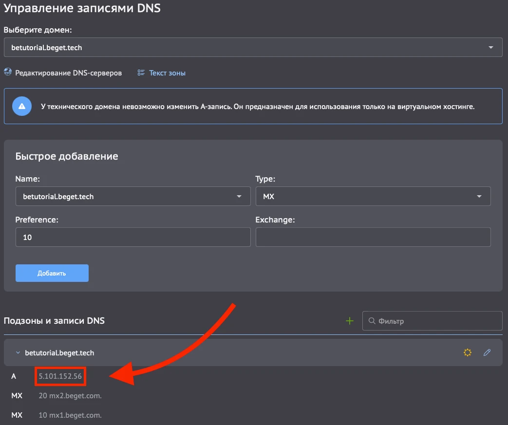
В ОС Windows для добавления соответствия домена и IP-адреса в файл hosts найдите в меню «Пуск» программу Блокнот (Notepad), нажмите на значок программы правой кнопкой мыши и выберите в Windows пункт «Запуск от имени администратора»:
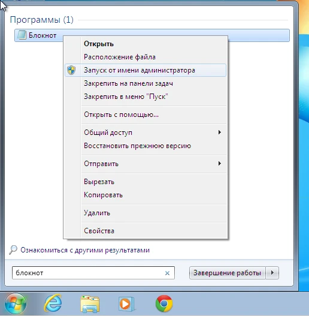
При необходимости введите пароль администратора, после чего откройте подменю Windows: Файл -> Открыть:
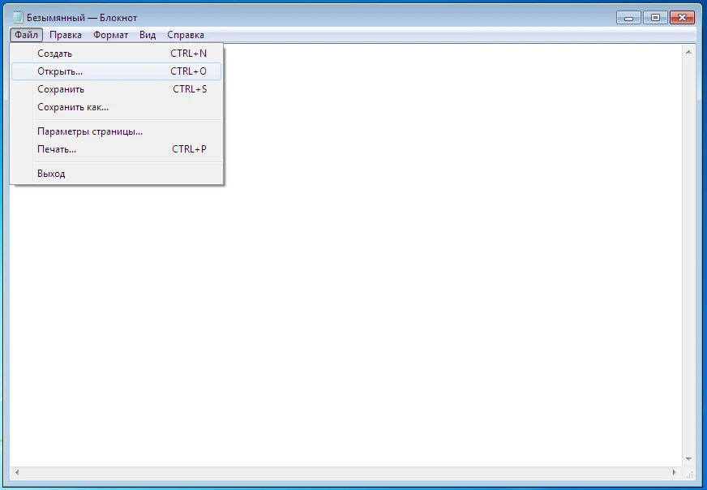
В открывшемся окне вставьте путь к файлу в поле «Имя файла»:
c:\windows\system32\drivers\etc\hosts
и нажмите кнопку «Открыть».
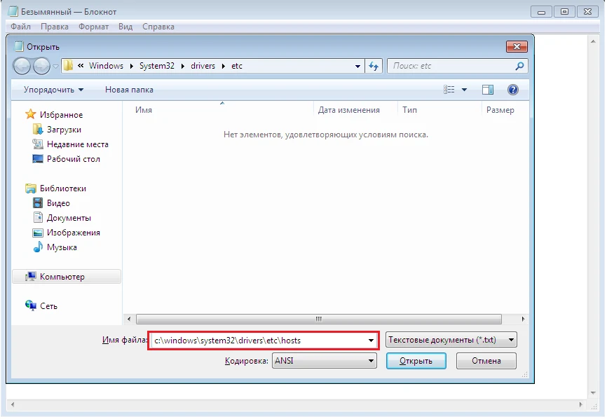
Стандартный hosts в Windows выглядит так:
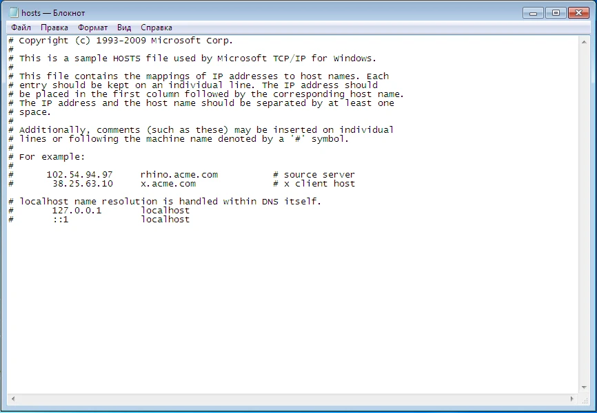
Добавьте в конец файла IP-адрес сервера и в той же строке через пробел доменное имя. Например:
5.101.152.56 primer.ru www.primer.ru
Осталось сохранить изменения. Для этого воспользуйтесь подменю Файл -> Сохранить или сочетанием клавиш CTRL+S.
В MacOS для добавления соответствия домена и IP-адреса в hosts откройте контекстное меню файлового менеджера Finder. Для этого нажмите правой кнопкой мыши на иконку Finder или после наведения курсора на иконку коснитесь двумя пальцами тачпада. Затем выберите Переход к папке.
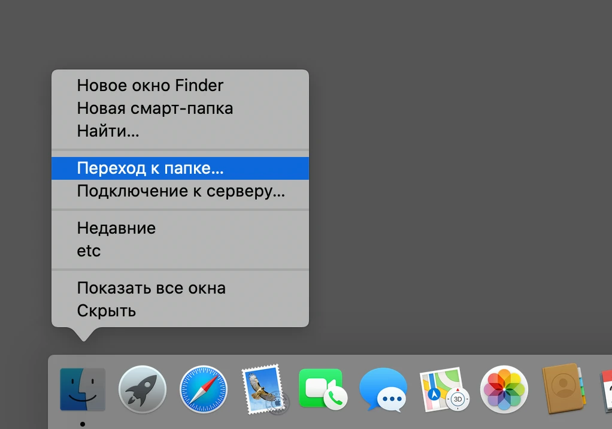
Затем укажите в адресной строке путь до файла hosts: /private/etc/hosts и нажмите кнопку "Перейти".
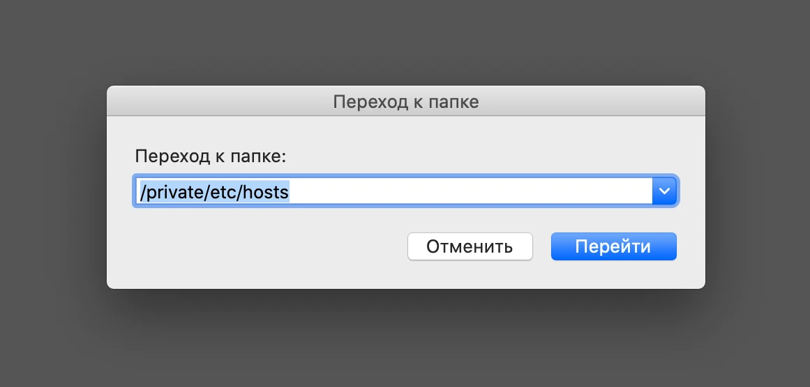
Далее необходимо скопировать hosts на рабочий стол. После чего открыть скопированный файл в текстовом редакторе, например, в стандартном редакторе TextEdit.
Дублировать файл необходимо, поскольку оригинальный файл защищен от редактирования.
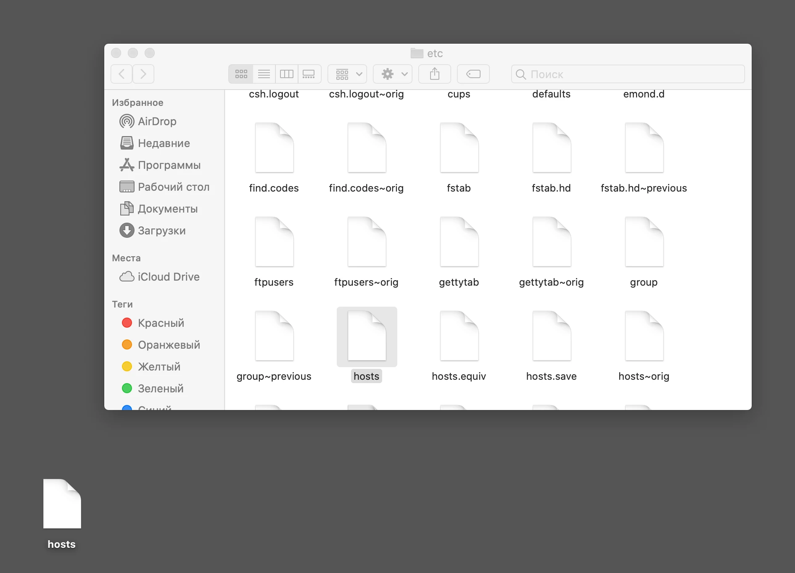
Стандартный файл hosts выглядит так:
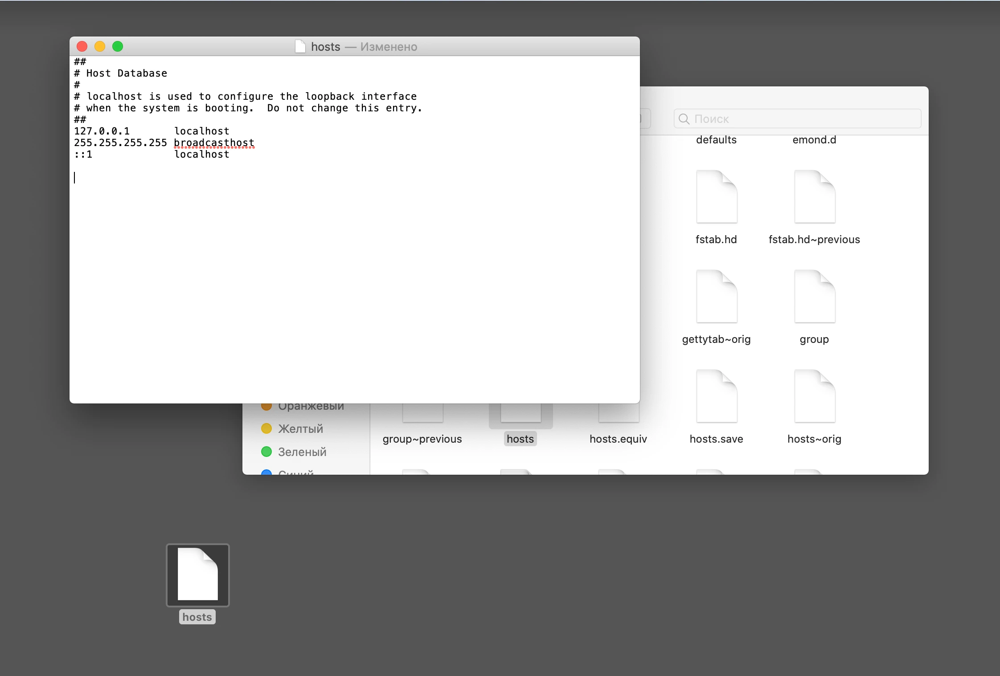
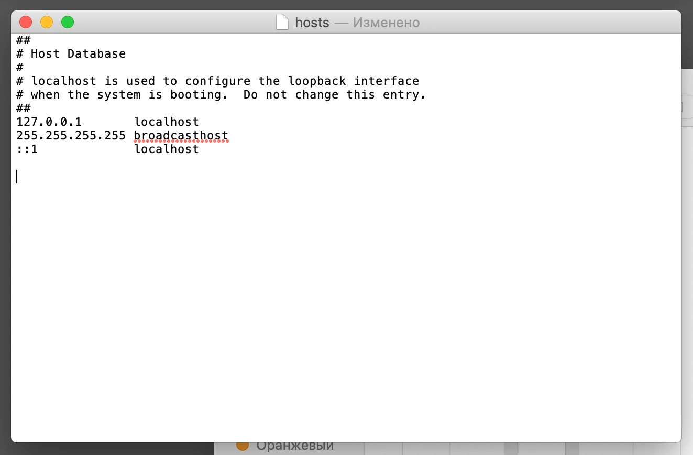
Добавьте в конец файла IP-адрес сервера и в той же строке через пробел доменное имя. Например:
Осталось сохранить изменения. Для этого воспользуйтесь меню Файл -> Сохранить или нажмите на клавиатуре сочетание клавиш ⌘ и S, затем кнопку Сохранить в появившемся окне.5.101.152.56 primer.ru www.primer.ru
Осталось сохранить изменения. Для этого воспользуйтесь меню Файл -> Сохранить или нажмите на клавиатуре сочетание клавиш ⌘ и S, затем кнопку Сохранить в появившемся окне.
Остается заменить старый файл /private/etc/hosts на новый (отредактированный), перетащив отредактированный файл в окно Finder, в директорию /private/etc/hosts и подтвердив замену.
Для замены файла потребуется:
Нажать на кнопку Аутентификация после перемещения файла в окно файлового менеджера Finder.
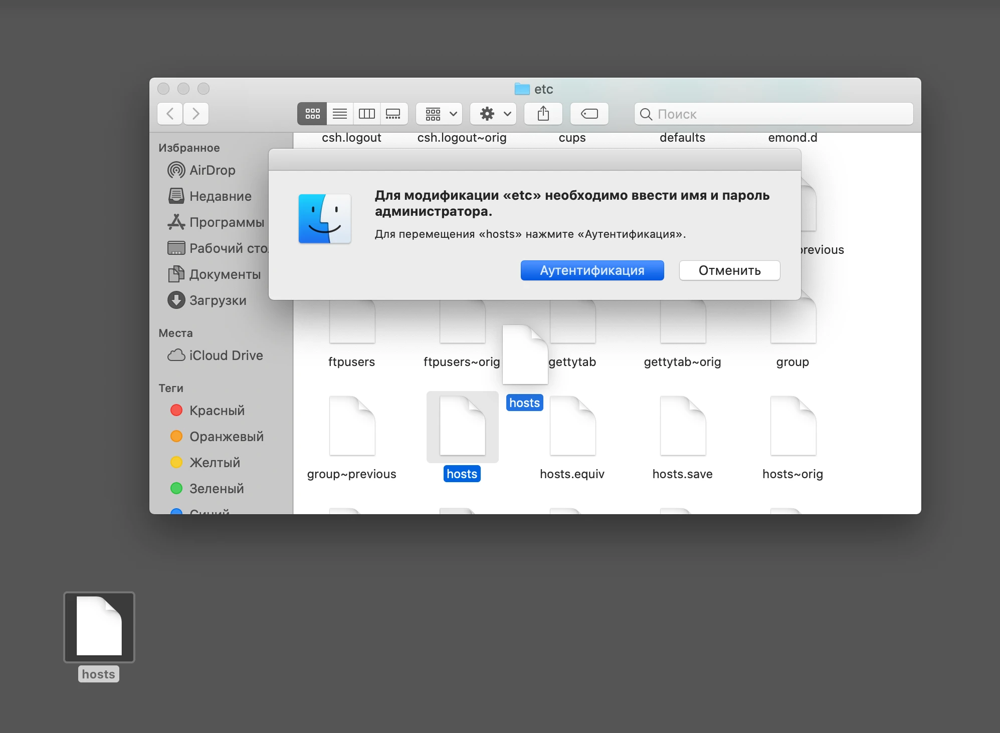
Выбрать вариант замены, нажав на кнопку Заменить.
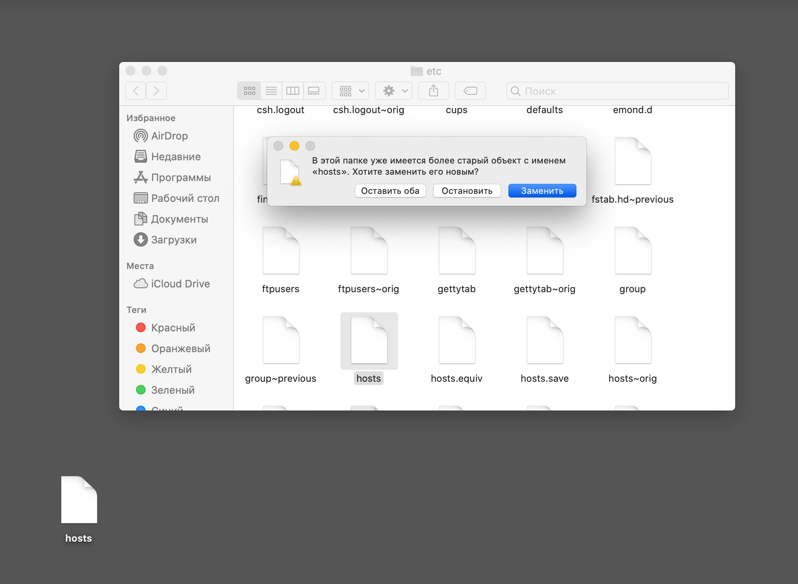
Ввести логин и пароль администратора вашего Mac и подтвердить действие.
Обычно логин и пароль соответствуют данным для авторизации вашей учетной записи пользователя операционной системы.
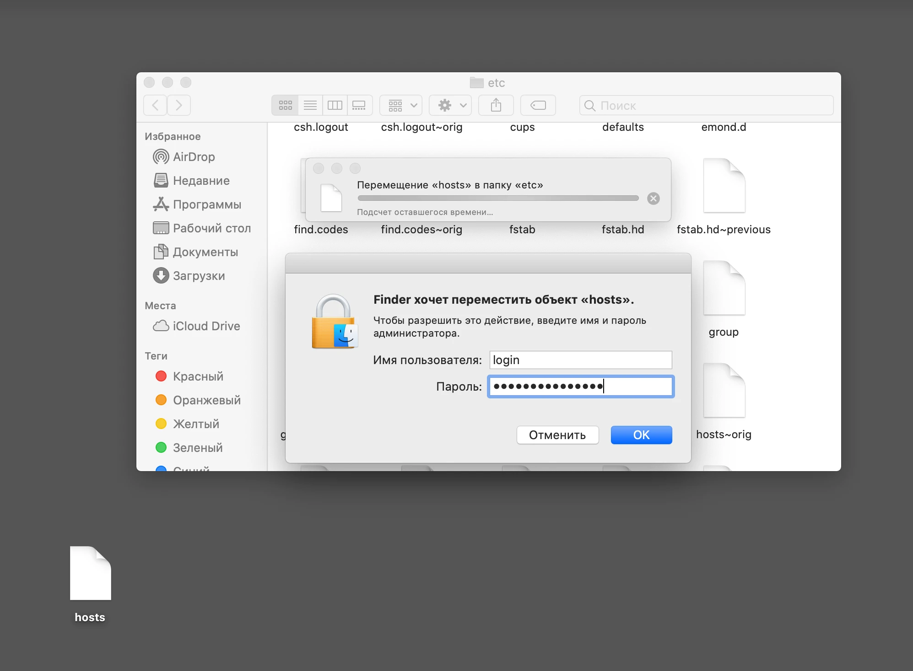
Другой вариант редактирования файла hosts, подходящий в том числе для Операционных систем Linux - редактирование содержимого файла hosts через Терминал.
Для этого в Терминале вводим sudo nano /etc/hosts и нажимаем клавишу Enter (Ввод). После чего нужно указать пароль от учётной записи пользователя Mac (или Linux, если вы используете её).
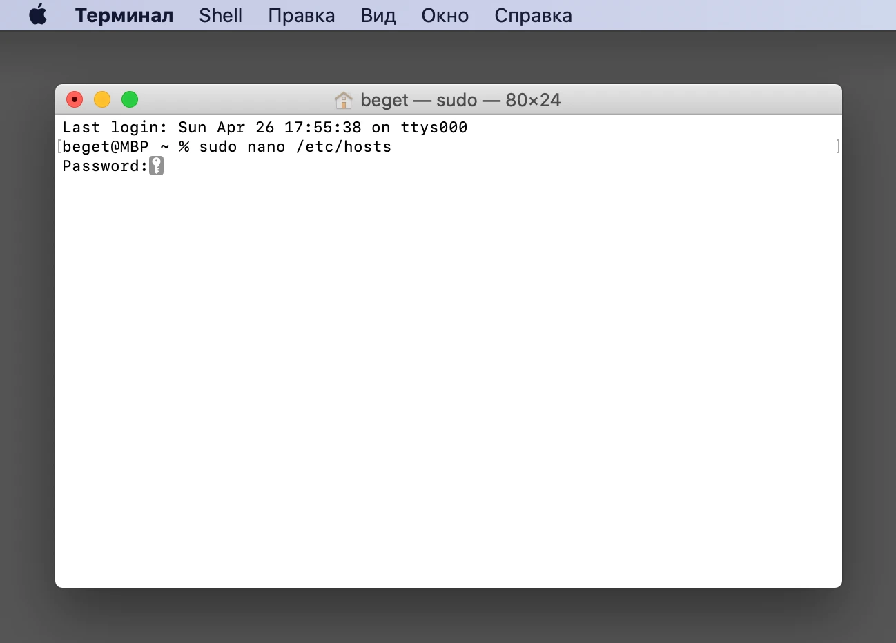
Стандартный файл hosts, открытый в текстовом редакторе nano, выглядит так:
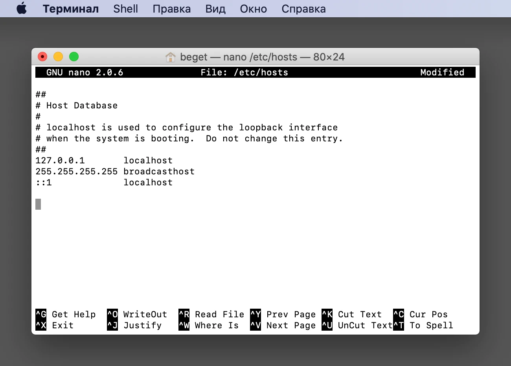
Добавьте в конец файла IP-адрес сервера и в той же строке через пробел доменное имя. Например:
5.101.152.56 primer.ru www.primer.ru
Осталось сохранить изменения. Для этого нажмите на клавиатуре сочетание клавиш ⌘ и X - Exit (выход).
Для ОС Linux сочетание клавиш Сtrl и X.
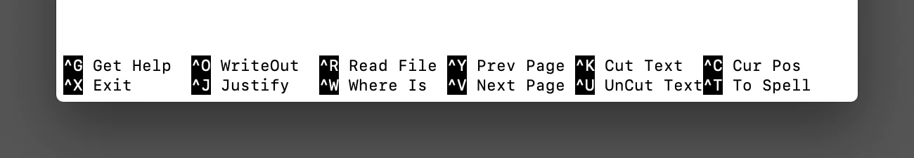
Выбрать вариант выхода с сохранением изменений, нажав сочетание клавиш ⌘ и Y - Yes (Да).
Для ОС Linux сочетание клавиш Сtrl и Y.
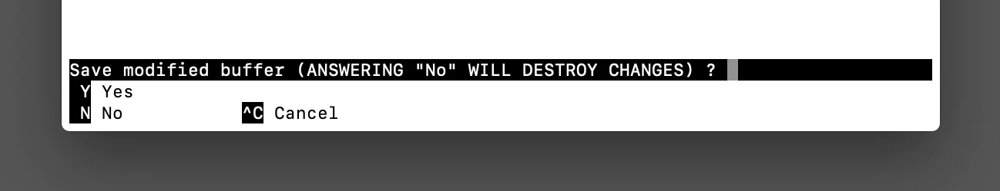
И, не меняя название файла, нажать клавишу Enter (Ввод).
Вариант для ОС Linux совпадает - клавиша Enter (Ввод).
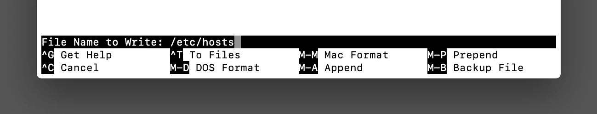
Теперь ваш компьютер знает, какому серверу посылать запросы, чтобы открыть сайт. Иногда для применения изменений может потребоваться перезагрузка компьютера и очистка кэша браузера.
Когда у провайдера точно обновятся данные DNS, — например, через неделю — рекомендуем удалить соответствие адреса и домена из файла hosts. Это избавит от возможных проблем в будущем: адрес сервера иногда меняется, и если он будет жестко прописан в hosts, с вашего компьтера сайт окажется недоступен.
Если возникнут вопросы, напишите нам, пожалуйста, тикет из панели управления аккаунта (раздел “Помощь и поддержка”), а если вы захотите обсудить эту статью или наши продукты с коллегами по цеху и сотрудниками Бегета – ждем вас в нашем сообществе в Telegram.
Теги:
118
405
Вверх
Услуги
Облачные серверы Облачные MySQL Облачные PostgreSQL S3-хранилище Хостинг VIP-хостинг Хостинг для 1C-Битрикс Регистрация доменов Выделенные серверы Аренда сервера с GPU Система доставки контента (CDN) Kubernetes
Cервисы и доп. продукты
Каталог приложений Продажа CMS Бесплатный хостинг SSL-сертификаты Гранты для бизнеса 152-ФЗ Sprut.io
О компании
Реквизиты Правила и лицензии Договоры Публичная оферта Партнерская программа Bug Bounty программа Контактная информация SLA облачных услуг Панель управления